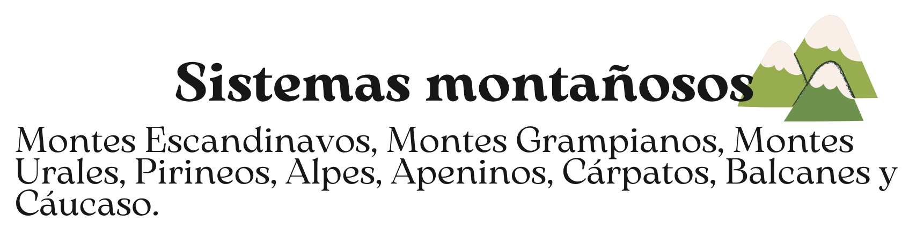

WELCOME EUROPE UNION
Relieve de Europa (principales unidades)
Entendemos como penínsulas a las porciones de tierra que están rodeadas de agua por todas partes, excepto por una, que se denomina istmo, y que la une al territorio más grande.


Entendemos que una montaña es una gran elevación del terreno que suele estar formada por tres partes representativas que son: el pie, la ladera y la cima o pico.
En Europa, los sistemas montañosos más elevados se encuentran en el sur y los de menor altitud en el norte.

Entendemos como llanura a un terreno igual, sin cambios de superficie relevantes. En Europa, podemos encontrar extensas llanuras, debido a que su altitud es baja, alrededor de los 300 metros sobre el nivel del mar.

TAREAS
Tarea 1. PENÍNSULAS
Haz click aquí para realizar un JUEGO de repaso sobre las penínsulas.
Tarea 2. SISTEMAS MONTAÑOSOS
Haz click aquí para realizar un JUEGO de repaso sobre los sistemas montañosos.
Tarea 3. LLANURAS
Haz click aquí para realizar la siguiente ficha en la que deberás tocar los paisajes en los que hay llanuras.
Haz click aquí para realizar un JUEGO de repaso sobre las llanuras.
Obra publicada con Licencia Creative Commons Reconocimiento Compartir igual 4.0